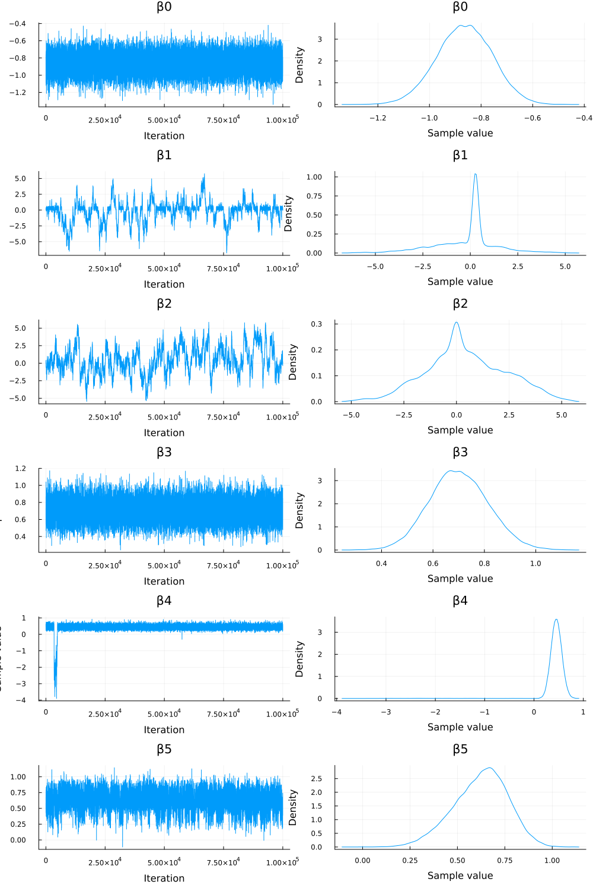
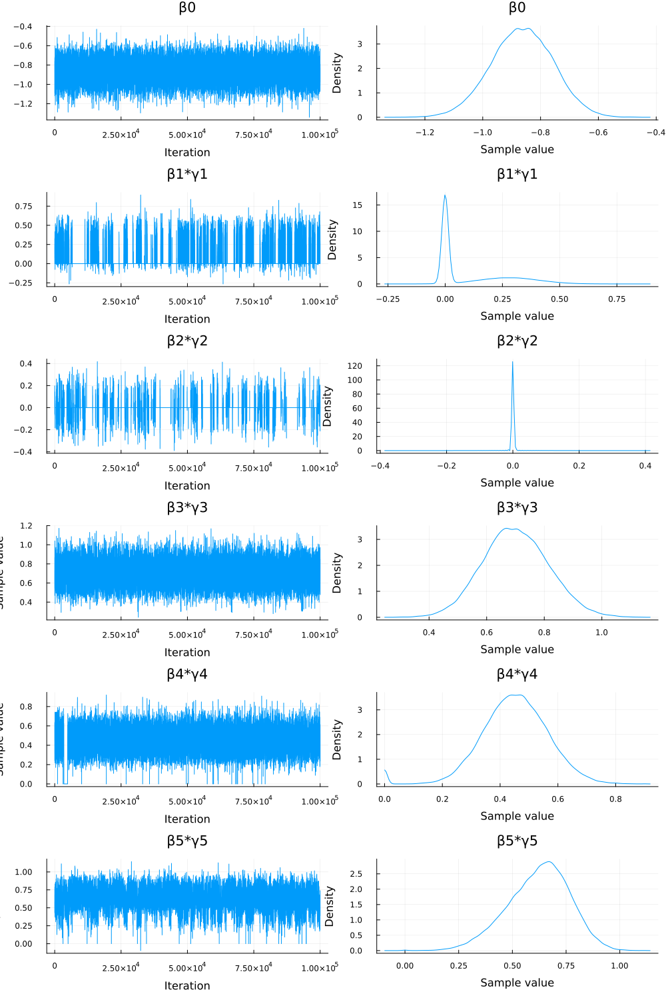
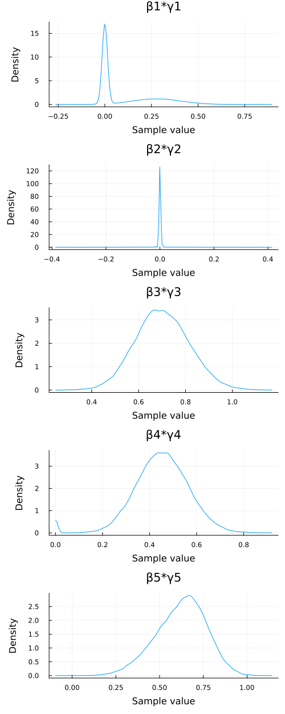

Exercise 10.5 Solution - Hoff, A First Course in Bayesian Statistical Methods
標準ベイズ統計学 演習問題 10.5 解答例
a)
Answer
sampling model
prior
calculation of acceptance ratio \(r\)
The likelihood and log-likelihood are as follows:
\begin{align*} p(\bm{y} | \bm{x}, \bm{\beta}, \bm{\gamma}) &= \prod_{i=1}^n \left( \frac{e^{\theta_i}}{1 + e^{\theta_i}} \right)^{y_i} \left( \frac{1}{1 + e^{\theta_i}} \right)^{1-y_i} \\ \log p(\bm{y} | \bm{x}, \bm{\beta}, \bm{\gamma}) &= \sum_{i=1}^n \left\{ y_i \log \left( \frac{e^{\theta_i}}{1 + e^{\theta_i}} \right) + (1-y_i) \log \left( \frac{1}{1 + e^{\theta_i}} \right) \right\} \\ &= \sum_{i=1}^n \left\{ y_i \left[ \log(e^{\theta_i}) - \log(1 + e^{\theta_i}) \right] + (1-y_i) \left[ - \log(1 + e^{\theta_i}) \right] \right\} \\ &= \sum_{i=1}^n \left( y_i \theta_i - y_i \log(1 + e^{\theta_i}) - (1-y_i) \log(1 + e^{\theta_i}) \right) \\ &= \sum_{i=1}^n \left( y_i \theta_i - \log(1 + e^{\theta_i}) \right) \\ \end{align*}For example, when updating \(\gamma_j\), the acceptance ratio is calculated as follows:
\[ r = \frac{ p(\bm{y} | \bm{x}, \bm{\beta}^{(s)}, \bm{\gamma}^{(s)}_{-j}, \gamma_j^{\ast} ) p(\gamma_j^{\ast})}{ p(\bm{y} | \bm{x}, \bm{\beta}^{(s)}, \bm{\gamma}^{(s)}_{-j}, \gamma_j^{(s)}) p(\gamma_j^{(s)}) } \times \frac{ J(\gamma_j^{(s)} | \gamma_j^{\ast}) }{ J(\gamma_j^{\ast} | \gamma_j^{(s)}) } \]
proposal distributions
import data
using DataFrames using DelimitedFiles using Distributions using GLM using LinearAlgebra using MCMCChains using OffsetArrays using Plots.PlotMeasures using Random using StatsBase using StatsModels using StatsPlots
data = readdlm("./Exercises/azdiabetes.dat", header=true) header = data[2] |> vec df = DataFrame(data[1], header) col_int = [:npreg, :glu, :bp, :skin, :age] col_float = [:bmi, :ped] col_str = :diabetes df[!,col_int] = Int.(df[!,col_int]) df[!,col_float] = Float32.(df[!,col_float]) df[!,col_str] = String.(df[!,col_str])
first(df, 5)
process data
predictors = [:npreg, :bp, :bmi, :ped, :age] X = hcat(ones(size(df, 1)), mapcols(zscore, df[!, predictors])) |> Matrix |> (x -> OffsetArray(x, :, 0:size(x, 2)-1)) # align the notation with the textbook y = map(x -> x == "Yes" ? 1 : 0, df[!, :diabetes]) |> Vector
X[1:5, :]
5×6 OffsetArray(::Matrix{Float64}, 1:5, 0:5) with eltype Float64 with indices 1:5×0:5:
1.0 0.447786 -0.284774 -0.390958 -0.403331 -0.707578
1.0 1.05164 -0.122308 -1.13212 -0.986707 2.17304
1.0 0.447786 0.852489 0.422864 -1.00702 0.314576
1.0 -1.06186 0.365091 2.1813 -0.708079 -0.521732
1.0 -1.06186 -0.934639 -0.943195 -1.07378 -0.800501
M-H algorithm
function _loglikelihood(y, X, β, γ) θ = parent(X) * (parent(β) .* [1;γ]) return sum(y .* θ - log.(1 .+ exp.(θ))) end
function update_βj(β, γ, j, δ, prior_var) β_prp = copy(β) β_prp[j] = rand(Normal(β[j], δ)) log_likelihood_diff = _loglikelihood(y, X, β_prp, γ) - _loglikelihood(y, X, β, γ) log_prior_ratio = logpdf(Normal(0, sqrt(prior_var)), β_prp[j]) - logpdf(Normal(0, sqrt(prior_var)), β[j]) # log_proposal_ratio = 0 because the proposal distribution is symmetric log_r = log_likelihood_diff + log_prior_ratio return log(rand()) < log_r ? β_prp : β end
function update_γj(β, γ, j) γ_prp = copy(γ) J_γ(x) = x == 1 ? 0 : 1 γ_prp[j] = J_γ(γ_prp[j]) log_r = _loglikelihood(y, X, β, γ_prp) - _loglikelihood(y, X, β, γ) return log(rand()) < log_r ? γ_prp : γ end
function logit_reg_with_var_select(y, X, β_init, γ_init, δ; S=1000, seed=42) Random.seed!(seed) # initialize β = copy(β_init) |> (x -> OffsetArray(x, 0:size(x, 1)-1)) γ = copy(γ_init) # prepare storage q = length(β) BETA = Matrix{Float64}(undef, S, q) |> (x -> OffsetArray(x, :, 0:q-1)) GAMMA = Matrix{Float64}(undef, S, q-1) for s in 1:S for j in 0:q-1 prior_var = j == 0 ? 16.0 : 4.0 β = update_βj(β, γ, j, δ, prior_var) end for j in 1:q-1 γ = update_γj(β, γ, j) end BETA[s, :] = β GAMMA[s, :] = γ end return BETA, GAMMA end
run M-H algorithm
glmfit = glm(parent(X), y, Binomial(), LogitLink()) β_init = coef(glmfit) |> (x -> OffsetArray(x, 0:size(x, 1)-1)) γ_init = ones(5) δ = 0.1 BETA, GAMMA = logit_reg_with_var_select(y, X, β_init, γ_init, δ; S=100000, seed=42)
chn_β = Chains(BETA, ["β0","β1", "β2", "β3", "β4", "β5"])
Chains MCMC chain (100000×6×1 Array{Float64, 3}):
Iterations = 1:1:100000
Number of chains = 1
Samples per chain = 100000
parameters = β0, β1, β2, β3, β4, β5
Summary Statistics
parameters mean std mcse ess_bulk ess_tail rhat ess_per_sec
Symbol Float64 Float64 Float64 Float64 Float64 Float64 Missing
β0 -0.8643 0.1074 0.0011 9840.1042 14036.6980 1.0000 missing
β1 -0.1809 1.6226 0.1067 248.3265 311.7660 1.0329 missing
β2 0.4507 1.8907 0.1242 233.2992 362.5542 1.0896 missing
β3 0.7011 0.1149 0.0012 9615.0141 14094.3526 1.0000 missing
β4 0.4211 0.3230 0.0203 2079.9963 785.9287 1.0011 missing
β5 0.6219 0.1437 0.0043 1145.7115 3625.2569 1.0085 missing
Quantiles
parameters 2.5% 25.0% 50.0% 75.0% 97.5%
Symbol Float64 Float64 Float64 Float64 Float64
β0 -1.0778 -0.9364 -0.8632 -0.7906 -0.6576
β1 -4.0152 -0.9524 0.2031 0.4246 3.1453
β2 -3.1593 -0.7570 0.2529 1.7502 4.1636
β3 0.4817 0.6228 0.6985 0.7777 0.9310
β4 0.2154 0.3784 0.4521 0.5261 0.6706
β5 0.3170 0.5285 0.6340 0.7230 0.8777
chn_γ = Chains(GAMMA, ["γ1", "γ2", "γ3", "γ4", "γ5"])
Chains MCMC chain (100000×5×1 Array{Float64, 3}):
Iterations = 1:1:100000
Number of chains = 1
Samples per chain = 100000
parameters = γ1, γ2, γ3, γ4, γ5
Summary Statistics
parameters mean std mcse ess_bulk ess_tail rhat ess_per_sec
Symbol Float64 Float64 Float64 Float64 Float64 Float64 Missing
γ1 0.3852 0.4866 0.0228 456.4099 NaN 1.0181 missing
γ2 0.0570 0.2319 0.0043 2899.6368 NaN 1.0005 missing
γ3 1.0000 0.0000 NaN NaN NaN NaN missing
γ4 0.9857 0.1186 0.0079 224.7567 NaN 1.0136 missing
γ5 0.9995 0.0217 0.0001 21159.3116 NaN 1.0000 missing
Quantiles
parameters 2.5% 25.0% 50.0% 75.0% 97.5%
Symbol Float64 Float64 Float64 Float64 Float64
γ1 0.0000 0.0000 0.0000 1.0000 1.0000
γ2 0.0000 0.0000 0.0000 0.0000 1.0000
γ3 1.0000 1.0000 1.0000 1.0000 1.0000
γ4 1.0000 1.0000 1.0000 1.0000 1.0000
γ5 1.0000 1.0000 1.0000 1.0000 1.0000
sequence \(\beta_j^{(s)}\)
# visualize the MCMC simulation results p = plot(chn_β) savefig("./ch10/img/exercise10-5a-beta.png") "#+NAME: beta_sequence\n[[file:./img/exercise10-5a-beta.png]]"

Figure 1: traceplots of \(\beta_j\)
sequence \(\beta_j^{(s)} \times \gamma_j^{(s)}\)
beta_gamma_prod = BETA[:, 1:end] .* GAMMA
beta_gamma_prod[1:5, :]
5×5 OffsetArray(::Matrix{Float64}, 1:5, 1:5) with eltype Float64 with indices 1:5×1:5:
0.193049 -0.0 0.611237 0.600768 0.584352
0.218734 0.0543198 0.611237 0.539856 0.584352
0.122185 0.0 0.731033 0.539856 0.538677
0.215258 0.0 0.702999 0.519566 0.515501
0.215258 0.0 0.686469 0.501306 0.515501
BETA_TIMES_GAMMA = hcat(parent(BETA[:, 0]), beta_gamma_prod); BETA_TIMES_GAMMA[1:6, :]
param_names = ["β0"; ["β$(j)*γ$(j)" for j in 1:5]]; chn_βγ = Chains(BETA_TIMES_GAMMA, param_names)
Chains MCMC chain (100000×6×1 Array{Float64, 3}):
Iterations = 1:1:100000
Number of chains = 1
Samples per chain = 100000
parameters = β0, β1*γ1, β2*γ2, β3*γ3, β4*γ4, β5*γ5
Summary Statistics
parameters mean std mcse ess_bulk ess_tail rhat ess_per_sec
Symbol Float64 Float64 Float64 Float64 Float64 Float64 Missing
β0 -0.8643 0.1074 0.0011 9840.1042 14036.6980 1.0000 missing
β1*γ1 0.1080 0.1586 0.0067 584.5482 461.7220 1.0174 missing
β2*γ2 0.0005 0.0275 0.0002 39422.3894 5534.9789 1.0005 missing
β3*γ3 0.7011 0.1149 0.0012 9615.0141 14094.3526 1.0000 missing
β4*γ4 0.4489 0.1199 0.0037 2252.0682 786.6917 1.0010 missing
β5*γ5 0.6217 0.1441 0.0044 1144.9386 3642.2000 1.0086 missing
Quantiles
parameters 2.5% 25.0% 50.0% 75.0% 97.5%
Symbol Float64 Float64 Float64 Float64 Float64
β0 -1.0778 -0.9364 -0.8632 -0.7906 -0.6576
β1*γ1 0.0000 0.0000 0.0000 0.2296 0.4768
β2*γ2 -0.0109 0.0000 0.0000 0.0000 0.0248
β3*γ3 0.4817 0.6228 0.6985 0.7777 0.9310
β4*γ4 0.2150 0.3784 0.4521 0.5261 0.6705
β5*γ5 0.3167 0.5284 0.6339 0.7230 0.8777
p_bg = plot(chn_βγ) savefig("./ch10/img/exercise10-5b-beta-gamma.png") "#+NAME: beta_gamma_sequence\n[[file:./img/exercise10-5b-beta-gamma.png]]"

Figure 2: traceplots of \(\beta_j \times \gamma_j\)
summary
日本語
MCMCシミュレーションによって得られた \(\beta_j\) と \(\gamma_j\) のサンプルを用いて、\(\beta_j\) の系列と \(\beta_j \times \gamma_j\) の系列の混合について評価した。
- \(\beta_j\) の系列:
- トレースプロット(1) と診断統計量 (
chn_βのサマリー) を見ると、特に \(\beta_1\) と \(\beta_2\) のチェーンは混合が悪いことが示唆された。rhat値が1から離れており (それぞれ約 1.03, 1.09)、ess_bulk値も他のパラメータと比較して低い (それぞれ約 248, 233)。- トレースプロットも安定していないように見える。
- これは、対応するインジケータ変数 \(\gamma_1\) と \(\gamma_2\) の事後平均がそれぞれ約 0.39 と 0.06 であり、シミュレーション中にこれらの変数がモデルから除外されている (\(\gamma_j=0\)) 状態が多かったためと考えられる。
- \(\gamma_j=0\) の場合、尤度は \(\beta_j\) に依存しなくなり、\(\beta_j\) の条件付き事後分布はその事前分布 (\(\mathcal{N}(0, 4)\)) となる。
- その結果、\(\beta_1\) と \(\beta_2\) のサンプラーはデータからの情報をあまり受けずに事前分布の広い範囲を動き回り、混合が悪く見えた。
- 一方、\(\beta_0, \beta_3, \beta_4, \beta_5\) については、対応する \(\gamma_j\) ( \(\gamma_0=1\) は固定、\(\gamma_3, \gamma_4, \gamma_5\) はほぼ常に1) が1であるため、データからの情報が反映され、混合は比較的良好であった (
rhat ≈ 1, 高いess)。
- トレースプロット(1) と診断統計量 (
- \(\beta_j \times \gamma_j\) の系列:
- この系列は、変数 \(j\) がモデルに含まれる場合 (\(\gamma_j=1\)) の係数の効果を表し、含まれない場合 (\(\gamma_j=0\)) は効果が 0 となる。
- トレースプロット (2) と診断統計量 (
chn_βγのサマリー) を見ると、こちらの系列は全体的に混合が良いことがわかった。- 特に
β1*γ1とβ2*γ2のrhat値は1に近くなり (それぞれ約 1.017, 1.0005)、ess_bulk値も改善した (それぞれ約 585, 39422)。 - トレースプロットも、特に
β2*γ2は 0 付近で非常に安定している。
- 特に
- これは、\(\gamma_j=0\) の場合に \(\beta_j \times \gamma_j\) の値が 0 に固定されるため、系列の変動が抑えられるからである。
- \(\gamma_1\) や \(\gamma_2\) が 0 になる頻度が高いため、対応する積の系列は多くの時間 0 を取り、結果として混合が良く見えた。
- 結論:
- 変数選択モデルにおいては、係数 \(\beta_j\) のみの系列を見ると、変数がモデルに含まれない場合に事前分布の影響で混合が悪く見えることがある。
- そのため、チェーンの混合を評価する際には、変数のモデルへの実質的な寄与を表す \(\beta_j \times \gamma_j\) の系列も合わせて確認することが重要である。
- 今回のケースでは、\(\beta_1 \times \gamma_1\) と \(\beta_2 \times \gamma_2\) の混合が良いことから、モデルはこれらの変数の効果（多くの場合 0 であるが、含まれる場合の効果も含む）について安定して学習していると解釈できる。
English
We evaluated the mixing of the MCMC chains for the \(\beta_j\) series and the \(\beta_j \times \gamma_j\) series using the samples obtained from the simulation.
- Series for \(\beta_j\):
- The trace plots (1) and diagnostic statistics (summary of
chn_β) suggested poor mixing, especially for the \(\beta_1\) and \(\beta_2\) chains.- The
rhatvalues were far from 1 (approx. 1.03 and 1.09, respectively), and theess_bulkvalues were low compared to other parameters (approx. 248 and 233, respectively). - The trace plots also appeared unstable.
- The
- This is likely because the posterior means of the corresponding indicator variables \(\gamma_1\) and \(\gamma_2\) were low (approx. 0.39 and 0.06, respectively), indicating that these variables were often excluded from the model (\(\gamma_j=0\)) during the simulation.
- When \(\gamma_j=0\), the likelihood does not depend on \(\beta_j\), and the conditional posterior distribution of \(\beta_j\) becomes its prior distribution (\(\mathcal{N}(0, 4)\)).
- As a result, the samplers for \(\beta_1\) and \(\beta_2\) moved around the wide range of the prior without much influence from the data, leading to the appearance of poor mixing.
- In contrast, for \(\beta_0, \beta_3, \beta_4, \beta_5\), the corresponding \(\gamma_j\) (\(\gamma_0=1\) is fixed, \(\gamma_3, \gamma_4, \gamma_5\) were almost always 1) were 1, allowing the data to inform the posterior, resulting in relatively good mixing (
rhat≈ 1, highess).
- The trace plots (1) and diagnostic statistics (summary of
- Series for \(\beta_j \times \gamma_j\):
- This series represents the coefficient’s effect when variable \(j\) is included in the model (\(\gamma_j=1\)) and is zero when excluded (\(\gamma_j=0\)).
- The trace plots (2) and diagnostic statistics (summary of
chn_βγ) showed that this series generally exhibited good mixing.- In particular, the
rhatvalues forβ1*γ1andβ2*γ2were close to 1 (approx. 1.017 and 1.0005, respectively), and theess_bulkvalues improved (approx. 585 and 39422, respectively). - The trace plots were also stable, especially for
β2*γ2, which stayed very close to 0.
- In particular, the
- This is because when \(\gamma_j=0\), the value of \(\beta_j \times \gamma_j\) is fixed at 0, reducing the series’ variability.
- Since \(\gamma_1\) and \(\gamma_2\) were frequently 0, the corresponding product series took the value 0 much of the time, resulting in the appearance of good mixing.
- Conclusion:
- In variable selection models, looking only at the \(\beta_j\) series can be misleading regarding mixing, as it might appear poor due to the influence of the prior when the variable is excluded from the model.
- Therefore, when assessing chain mixing, it is crucial to also examine the \(\beta_j \times \gamma_j\) series, which represents the variable’s actual contribution to the model.
- In this case, the good mixing of the \(\beta_1 \times \gamma_1\) and \(\beta_2 \times \gamma_2\) series suggests that the model is stably learning the effects of these variables (which are often zero, but also includes their effects when included).
b)
Answer
top five most frequently occurring values of \(\gamma\)
gamma_tuples = [tuple(Int.(GAMMA[i, :])...) for i in 1:size(GAMMA, 1)]; gamma_tuples[1:5]
gamma_counts = countmap(gamma_tuples); sorted_gamma_counts = sort(collect(gamma_counts), by=x->x[2], rev=true); sorted_gamma_counts
# sorted_gamma_counts はすでに計算済み # 上位5つを取得 top5_gamma = sorted_gamma_counts[1:5] # 総サンプル数を取得 S = size(GAMMA, 1) # 上位5つのγベクトル、出現回数、推定事後確率を表示 println("Top 5 most frequent gamma vectors, counts, and estimated posterior probabilities:") println("Total samples (S) = $(S)") println("-"^60) println("Gamma Vector Count Estimated Probability (Count/S)") println("-"^60) for (gamma_vec, count) in top5_gamma prob = count / S println("$(gamma_vec) $(rpad(count, 7)) $(round(prob, digits=4))") end println("-"^60)
How good are the estimates?
日本語
- 結果の解釈:
- 上位のモデルを見ると、\(\gamma_3\) (BMI) と \(\gamma_5\) (Age) は常に1となっている。これは、これらの変数が糖尿病の予測において重要であることを強く示唆している。
- \(\gamma_2\) (Blood Pressure) は上位2モデル（合計確率約93%）では0であり、\(\gamma_1\) (Pregnancies) も最も確率の高いモデル（確率約58%）では0となっている。これは、これらの変数の予測への寄与が相対的に小さい可能性を示唆している。
- \(\gamma_4\) (Pedigree) は上位4モデルでは1だが、5番目のモデルでは0となっており、重要度は中程度かもしれない。
- 最も確率の高いモデルは、BMI, 糖尿病の血統, 年齢 のみを含むモデル
γ = (0, 0, 1, 1, 1)であった。
- 推定の質の評価:
- MCMCの総サンプル数 (
S = 100,000) は十分に大きい。 - 事後確率は上位2つのモデルに非常に集中しており（合計約93%）、上位5モデルで全体の約99%を占める。このように確率が集中している場合、上位モデルの相対的な頻度の推定は比較的安定しやすい。
- \(\gamma\) のチェーンの診断統計量を見ると、\(\gamma_3\) と \(\gamma_5\) は常に1であり問題ない。\(\gamma_2\) の混合も良好であった (
rhat≈ 1.00,ess_bulk≈ 2900)。\(\gamma_1\) と \(\gamma_4\) の混合は完璧ではないが (rhat≈ 1.02, 1.01;ess_bulk≈ 456, 225)、致命的に悪いわけではない。 - 以上を考慮すると、特に上位2つのモデルの推定事後確率（約 0.575 と 0.354）はかなり信頼できると考えられる。3位以下のモデルの確率推定にはやや不確実性が残るものの、これらのモデルが他の多くの可能なモデルよりもはるかに確率が高いという結論は頑健である可能性が高い。
- MCMCの総サンプル数 (
English
- Interpretation of Results:
- Looking at the top models, \(\gamma_3\) (BMI) and \(\gamma_5\) (Age) are always 1. This strongly suggests that these variables are important for predicting diabetes.
- \(\gamma_2\) (Blood Pressure) is 0 in the top two models (total probability ≈ 93%), and \(\gamma_1\) (Pregnancies) is 0 in the most probable model (probability ≈ 58%). This suggests that the predictive contribution of these variables might be relatively small.
- \(\gamma_4\) (Pedigree) is 1 in the top four models but 0 in the fifth model, indicating potentially moderate importance.
- The most probable model was
γ = (0, 0, 1, 1, 1), which includes only BMI, Pedigree, and Age.
- Assessment of Estimate Quality:
- The total number of MCMC samples (
S = 100,000) is sufficiently large. - The posterior probability is highly concentrated in the top two models (totaling ≈ 93%), and the top five models account for ≈ 99% of the total probability mass. When the probability is concentrated like this, the estimation of the relative frequencies of the top models tends to be relatively stable.
- Examining the diagnostic statistics for the \(\gamma\) chains, \(\gamma_3\) and \(\gamma_5\) were always 1 and pose no issue. The mixing for \(\gamma_2\) was also good (
rhat≈ 1.00,ess_bulk≈ 2900). The mixing for \(\gamma_1\) and \(\gamma_4\) was not perfect (rhat≈ 1.02, 1.01;ess_bulk≈ 456, 225) but not critically poor. - Considering these points, the estimated posterior probabilities for the top two models (≈ 0.575 and 0.354) are likely quite reliable. While there might be slightly more uncertainty in the probability estimates for the 3rd to 5th models, the conclusion that these models are far more probable than most other possible models is likely robust.
- The total number of MCMC samples (
c)
Answer
posterior densities
# Plot posterior densities for βj*γj (j=1 to 5) # We select the parameters of interest from the chain object p_density_bg = plot(chn_βγ[:, ["β$(j)*γ$(j)" for j in 1:5], :], seriestype=:density, left_margin=10mm) savefig("./ch10/img/exercise10-5c_density.png") "#+NAME:exercise10-5c_density\n[[file:./img/exercise10-5c_density.png]]"

posterior means
mean(GAMMA, dims=1)
1×5 Matrix{Float64}:
0.38517 0.05703 1.0 0.98574 0.99953
- \(\mathrm{Pr}(\gamma_1=1|\boldsymbol{x}, \boldsymbol{y}) \approx 0.385\)
- \(\mathrm{Pr}(\gamma_2=1|\boldsymbol{x}, \boldsymbol{y}) \approx 0.057\)
- \(\mathrm{Pr}(\gamma_3=1|\boldsymbol{x}, \boldsymbol{y}) \approx 1.000\)
- \(\mathrm{Pr}(\gamma_4=1|\boldsymbol{x}, \boldsymbol{y}) \approx 0.986\)
- \(\mathrm{Pr}(\gamma_5=1|\boldsymbol{x}, \boldsymbol{y}) \approx 1.000\)